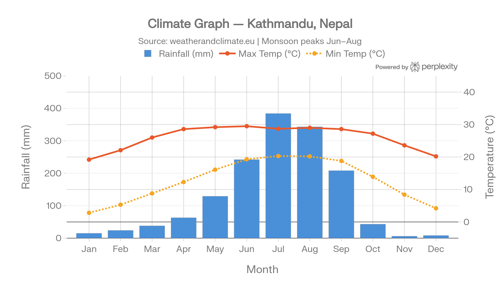
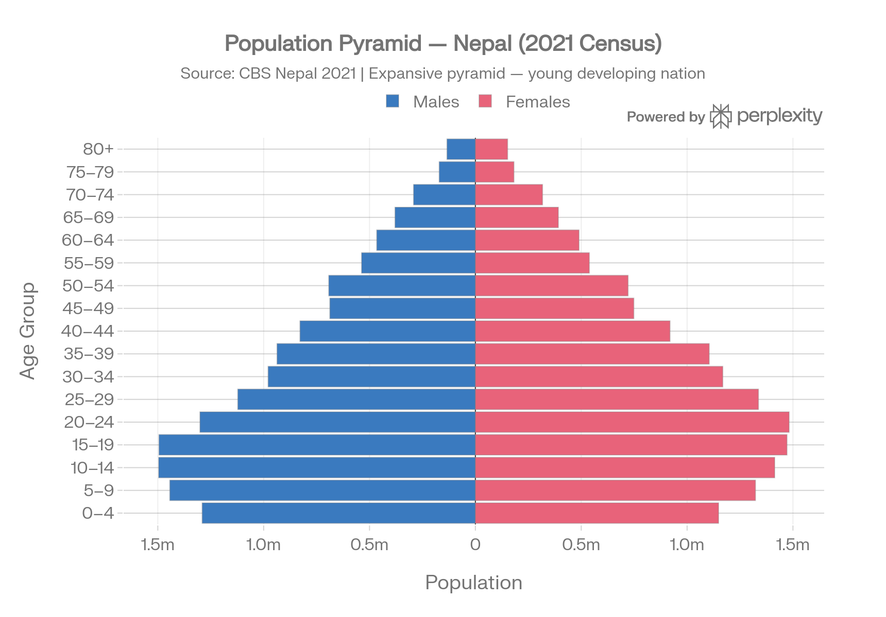
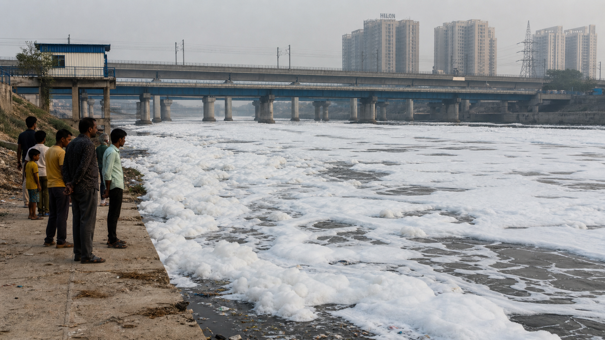
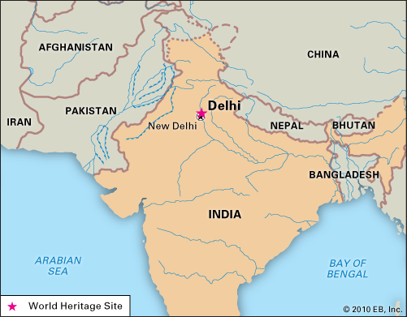
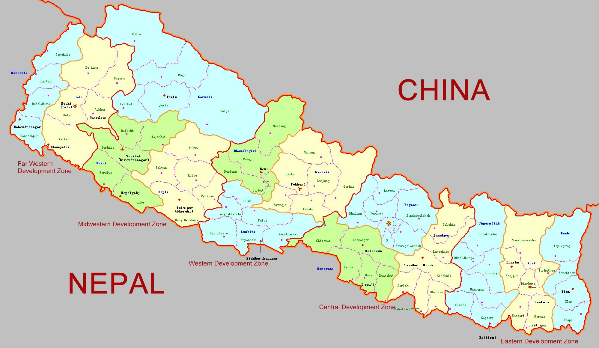

Section 1 — Climate Graph (Kathmandu, Nepal)
Use the climate graph for Kathmandu to answer Questions 1–6.

Q1 In which season does Kathmandu receive the most rainfall?
Q2 Which two months are likely to have the highest rainfall in Kathmandu?
Q3 What is the approximate average temperature in the coolest month in Kathmandu?
Q4 Kathmandu has a distinct wet season and dry season.
Q5 Which statement best describes the pattern of temperature over the year in Kathmandu?
Q6 During which part of the year might rural communities near Kathmandu find it hardest to access safe, clean water?
Section 2 — Population Pyramid (Nepal)
Use the population pyramid for Nepal to answer Questions 7–11.

Q7 What does the wide base of Nepal’s population pyramid show?
Q8 Which statement best describes Nepal’s stage of development, based on its population pyramid?
Q9 In the future, Nepal’s large number of young people could increase pressure on water supplies, especially in cities.
Q10 Which age group appears largest in Nepal’s population pyramid?
Q11 Match each population term with the best definition.
Section 3 — Photographic Interpretation: Polluted River (India)
Study the photograph of a polluted urban river in India to answer Questions 12–15.

Q12 What does the thick white foam on the river’s surface most likely show?
Q13 Even if the water was boiled, it would still be unsafe to drink from this river.
Q14 Which group of people would be at greatest risk from this polluted river?
Q15 Which action is most likely to help improve the river’s water quality in the long term?
Section 4 — Map Skills: India and Nepal
Use the maps of India and Nepal to answer Questions 16–19.


Q16 On the map of India, where is Delhi located?
Q17 Nepal is a landlocked country (it has no coastline).
Q18 Which physical feature is shared by parts of both India and Nepal and is important for water resources?
Q19 Match each water-related term with its best description.
Section 5 — Flooding and Water Scarcity
Answer Questions 20–23 about floods and water scarcity.
Q20 Which natural event most often causes flooding in parts of India and Nepal?
Q21 Flooding can be a benefit for some farmers because it brings fresh silt and nutrients to their fields.
Q22 Which statement best describes water scarcity?
Q23 A village in Nepal has heavy rainfall during the monsoon, but very little safe water in the dry season. Which action would most help reduce water scarcity there?
Section 6 — Text Source: Water in India
Read the short text and answer Questions 24–26.
India has nearly 18% of the world’s population but only about 4% of the world’s freshwater resources. Many rivers and groundwater sources are under pressure from overuse, pollution and a changing climate. In some areas, people walk long distances to collect safe drinking water. In others, floods can cause serious damage to homes, roads and crops.
Adapted from sources on India’s water resources.Q24 According to the text, what is the main challenge India faces with its water resources?
Q25 Both flooding and water scarcity are water-related problems that can affect people in India.
Q26 Which action would most help in reducing water problems described in the text?
Section 7 — WaterAid Project in Nepal
Read about a WaterAid project and answer Questions 27–30.
In Bardiya District, Nepal, WaterAid and local partners worked with schools to improve WASH (Water, Sanitation and Hygiene). They helped install safe drinking water taps, separate toilets for girls and boys, and handwashing stations. Teachers were trained to teach students about hygiene and to manage the school toilets. These changes made it easier for girls to attend school regularly, especially during menstruation.
Adapted from WaterAid project descriptions in Nepal.